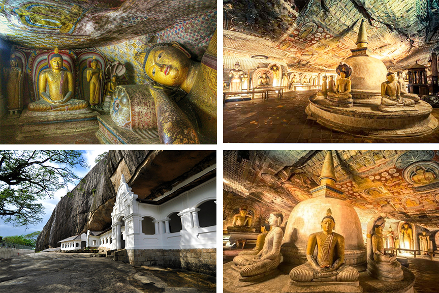
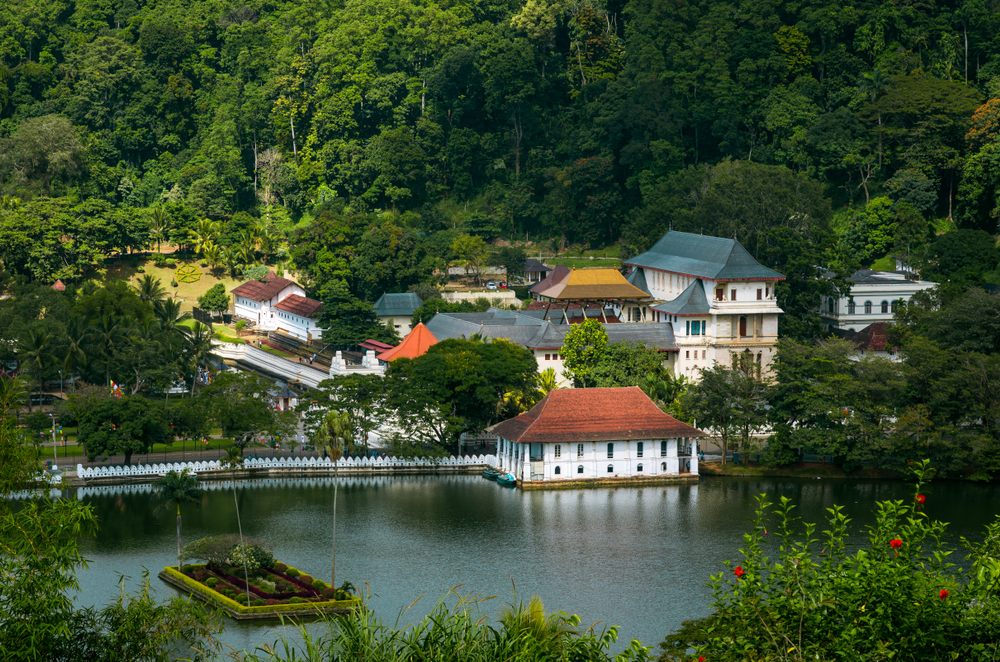

Sri Lanka is a South Asian island country located in the Indian Ocean.
The country has a rich and diverse cultural heritage that dates back
over 2,500 years. The culture of Sri Lanka is a blend of various
influences, including Buddhist, Hindu, Muslim, and European.
Rangiri Dambulla Cave Temple

Rangiri Dambulla Cave Temple is a UNESCO World Heritage site located in
the central part of Sri Lanka, near the town of Dambulla. It is also
known as the Golden Temple of Dambulla or the Dambulla Rock Temple. The
temple complex consists of five caves with over 150 Buddha statues and
various other sculptures and murals.
The temple dates back to the 1st century BC when King Valagamba took
refuge in the caves during his 14-year exile from Anuradhapura. The
caves were then transformed into a temple by King Vattagamini Abhaya
(Valagamba) who had regained the throne in Anuradhapura.
The caves are spread over an area of 2,100 square meters and are
situated on a massive granite outcrop that rises 160 meters above the
surrounding plain. The caves are reached by a series of steps that lead
to a massive gateway decorated with intricate carvings and paintings.
The cave walls and ceilings are adorned with colorful frescoes depicting
various scenes from the life of the Buddha and other important figures
from Buddhist mythology
Sacred City of Kandy

The Sacred City of Kandy is a UNESCO World Heritage site located in the
central highlands of Sri Lanka. It was the last capital of the ancient
kings' era of Sri Lanka and is now considered the cultural capital of
the country. Kandy is a major pilgrimage site for Buddhists and is home
to the Temple of the Tooth Relic, which houses the sacred tooth relic of
the Buddha.
The city of Kandy is surrounded by hills and tea plantations, with the
tranquil Bogambara Lake at its center. The Temple of the Tooth Relic is
located in the heart of the city and is one of the most sacred Buddhist
sites in the world. The temple complex includes a series of buildings
and shrines, including the main shrine room where the tooth relic is
kept.
Sacred City of Anuradhapura
The Sacred City of Anuradhapura is a UNESCO World Heritage site located
in the North Central Province of Sri Lanka. It was the capital of Sri
Lanka from the 4th century BCE until the 11th century CE and is
considered one of the most important archaeological sites in South Asia.
Anuradhapura is a major pilgrimage site for Buddhists and is home to
many ancient Buddhist temples and monuments
The city of Anuradhapura is known for its impressive architectural
feats, such as the Ruwanwelisaya, which is a massive stupa that was
built in the 2nd century BCE and is still considered one of the tallest
ancient structures in the world. The city is also home to the
Thuparamaya, the oldest dagoba in Sri Lanka, and the Jaya Sri Maha
Bodhi, which is a sacred fig tree believed to have been grown from a
sapling of the original Bodhi tree under which the Buddha attained
enlightenment.
Old Town of Galle and its Fortifications
The Old Town of Galle and its Fortifications is a UNESCO World Heritage
site located on the southwest coast of Sri Lanka. It is a 17th-century
Dutch fortification that was built to protect the city from invading
colonial powers. The fort is now considered one of the best-preserved
examples of a fortified city built by European colonial powers in Asia.
The city of Galle was first fortified by the Portuguese in the 16th
century, but it was the Dutch who made significant improvements to the
fortifications, which still stand today. The fort is a blend of European
and South Asian architectural styles and is surrounded by a moat and
thick walls that were built to withstand attacks from both land and sea.
Overall, the Old Town of Galle and its Fortifications are a significant
cultural landmark in Sri Lanka and showcase the country's rich
architectural and colonial heritage. It is a must-visit destination for
anyone interested in the history and culture of Sri Lanka and is a
testament to the country's rich and diverse cultural heritage.
Link to the page editor